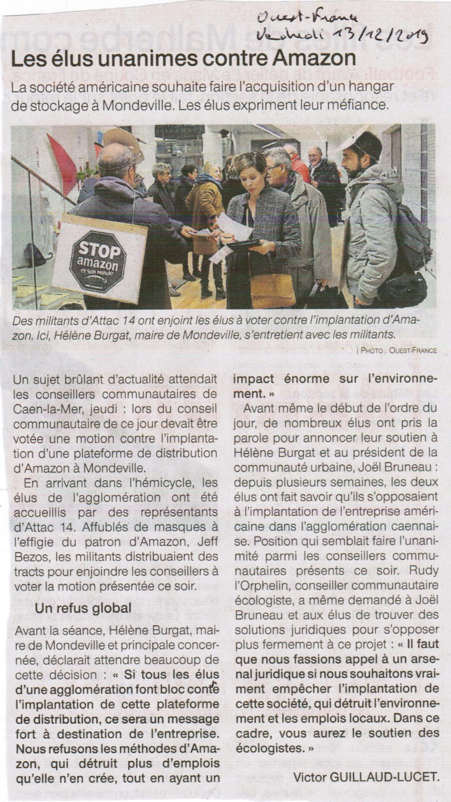

2019 : Echec d’Amazon à Mondeville
Pourquoi est-ce que Moult accepte l’implantation d’Amazon que Mondeville et Caen-la-Mer ont refusé ?
Pourquoi des élus de droite comme de gauche ont-ils fait front à Caen-la-Mer, et pourquoi ont-ils réussi à empêcher ce que Moult est prêt à accepter sans le moindre débat public ?
En 2019, Amazon avait déjà tenté de s’implanter dans le Calvados, à Mondeville, sur un terrain appartenant à l’entreprise Bosch.
C’est en insistant que la Maire de Mondeville, Hélène Burgat, a découvert le pot-au-roses. Car comme bien souvent, Amazon avance masqué.
Pour des emplois, on ne vend pas son âme, il y a des limites au libéralisme . A lire dans Maires de France : Lien
Mais Mme Burgat s’y est vigoureusement opposée comme on le lit dans son communiqué diffusé sur sa page Facebook : Lien
Le 12 décembre 2019, c’est au tour des élu-e-s de Caen-la-Mer de s’opposer, à l’unanimité, droite et gauche confondues, à ce projet d’installation :
Si la Communauté urbaine s’emploie chaque jour à accompagner les entreprises de son territoire dans leur développement et à accueillir dans les meilleures conditions possibles les porteurs de projets, les élus de la Communauté urbaine sont en revanche opposés au modèle proposé par Amazon
Très clairement, les motifs de refus sont exposés par les élu-e-s :
• emploi : la destruction des emplois dans le commerce physique traditionnel
• impôts : l’utilisation par Amazon d’un système d’évasion fiscale via un paradis fiscal pour se soustraire à l’impôt engendrant ainsi une concurrence déloyale avec le commerce en ligne hexagonal et les commerces physiques
• environnement : des activités qui impactent fortement l’environnement
Alors, nous posons toujours la question : Comment est-ce que ce qui a été refusé à Mondeville et Caen-la-Mer peut-il être accepté à Moult ?
A part sur les nuisances locales qui seraient déplacées, Amazon à Mondeville ou Moult c’est pareil : destruction d’emplois et de commerces physiques, évasion fiscale, aggravation du dérèglement climatique, pollutions.
A lire :
- Liberté du 26/11/2019 : Amazon veut s’implanter dans l’agglo de Caen, les élus s’y opposent ! article Actu.fr
- France Bleu : Près de Caen, la ville de Mondeville dit NON à Amazon, l’entreprise répond. article France Bleu